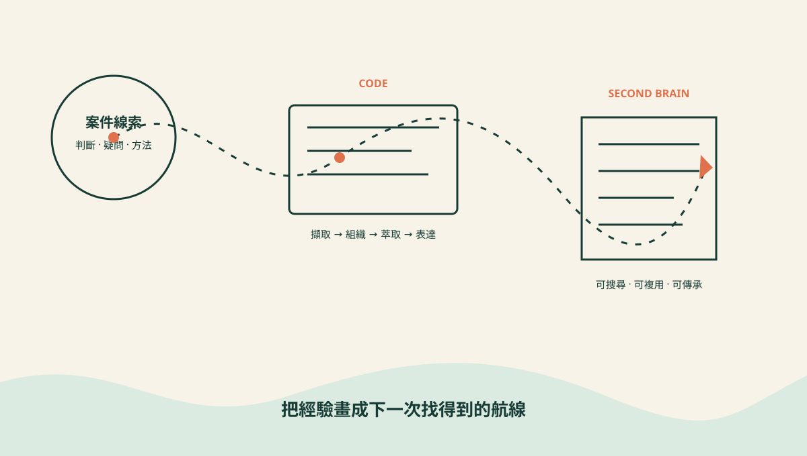

稽核工作年年遇到相似的風險，卻常像一艘失憶的船，每次出航都重新畫地圖。第二大腦要做的，就是把過去的判斷、方法與踩過的坑，變成未來找得到的航線。

什麼是稽核人員的第二大腦？
「Building a Second Brain」是 Tiago Forte 推廣的個人知識管理方法。核心不是把所有東西收藏起來，而是把有用資訊整理成未來的自己能找到、能採取行動的形式。Forte 將主要流程整理為 CODE：Capture（擷取）、Organize（組織）、Distill（萃取）、Express（表達）。
換成稽核語言，它應該能回答：上次怎麼找到這類異常？某個風險紅旗曾在哪個案件出現？查核程序為何改版？當時排除某條線索的依據是什麼？
能被未來的自己找到，才叫知識；只能靠「我記得好像……」，那比較像一張被海風吹走的藏寶圖。
為什麼稽核知識特別容易失蹤？
- 結論很多，推理很少：底稿記下結論，卻未必保留曾考慮哪些方向、為何排除，以及判斷標準如何形成。
- 格式分散，搜尋困難：Word 報告、Excel 底稿、郵件與手寫筆記各自為政。它們像四艘船，各有羅盤，沒有共同海圖。
- 知識跟著人走：產業洞察和風險直覺留在資深同仁腦中；人一離開，組織便失去一部分記憶。
工作底稿，不就是第二大腦嗎？
不是。工作底稿是可供覆核的查核證據，格式正式、範圍明確、以支持結論為目的；第二大腦則是內部思考系統，可以保存尚待驗證的疑問、方法演進與跨案件連結。前者回答「這次查核做了什麼」，後者協助你回答「下次遇到類似情況，我們知道些什麼」。
兩者應互補，但不能混成一鍋神祕濃湯。正式證據仍須留在受控的底稿系統；第二大腦只保存經過適當去識別、可安全複用的知識。
先決定哪些寶物值得帶上船
- 異常判斷邏輯：為什麼高風險？排除條件是什麼？
- 查核程序演進：版本改了什麼？改動背後的證據是什麼？
- 法規與政策摘要：實務解釋、適用情境與查核對應方式。
- 去識別化的風險模式：曾出現的紅旗、例外型態與追蹤結果。
- 失誤與修正：哪個假設錯了？團隊最後如何發現並修正？
最值得保存的往往不是結論，而是「為什麼做這個判斷」。只收藏結果，就像拿到寶箱卻把鑰匙丟進海裡——氣勢有了，實用性沒有。
用 PARA，替每筆知識安排一個港口
分類不必完美。真正重要的是：你知道東西該放哪裡，也知道下次該去哪裡撈。別花三小時設計標籤，最後只記下一篇「如何設計標籤」——那艘船會永遠停在港口。
一條今天就能啟航的五步流程
- 擷取 Capture
查核中有價值的發現、判斷與疑問，先用一句話記下來；不要等它「整理好」才保存。
- 組織 Organize
依 PARA 放到最接近未來用途的位置。進行中的案件進 Projects，常用方法進 Resources，結案後再移到 Archive。
- 萃取 Distill
標出最關鍵的一兩句，補上背景、判斷依據和可搜尋關鍵字，讓未來不用重讀整份文件。
- 表達 Express
把知識做成查核程序、紅旗清單、訪談題庫或教育訓練。知識被使用，才會被修正得更精準。
- 連結 AI Connect
這是稽核版加上的第五步：讓經核准的 AI 在適當資料邊界內協助搜尋、比對與草擬；輸出仍由稽核人員驗證。
15 分鐘起步，不必先買一艘黑珍珠號
建立一則「重複付款」知識卡，只有五個欄位：風險描述、判斷規則、合理例外、覆核證據、上次學到的事。下次查核前先搜尋它，再決定是否更新。工具可以是 Obsidian、Notion、公司核准的知識庫，甚至受控的純文字檔；流程比工具名稱重要。
安全邊界：寶藏要保存，機密別外流
- 不複製原始敏感資料：保存方法、邏輯與模式，不把真實交易明細或個資搬進個人筆記。
- 先去識別再記錄：案例改用概化情境、代碼或匿名描述，並避免可重新識別的組合資訊。
- 遵守公司核准工具：確認資料分類、儲存地點、存取權限、保存期限與離職交接規則。
- AI 仍需最小揭露：即使工具標榜安全，也只提供完成任務所需的最少資訊，並保留人工覆核。
如果那個三個月後重現的舞弊手法，被做成一張知識卡
繼任者會先搜到過去的異常型態、排除規則與覆核證據，再把它加入本次資料分析，而不是從零猜測。第二大腦沒有替他下結論；它只是把前人的判斷送回甲板，讓團隊有機會提早看見同一面紅旗。
AI 能協助整理、搜尋和串連，但第一張可靠的海圖，仍要由稽核人員親手畫下。